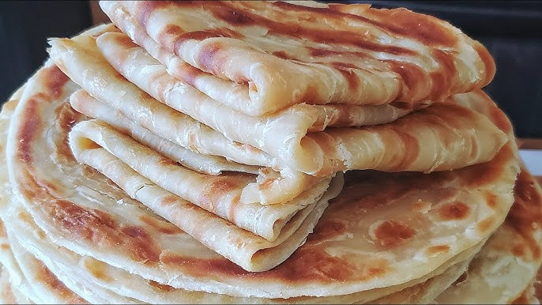

SOFT LAYERED CHAPATI

Chapatis or 'chapos' as we call em in our part of the world - the awesome part of the world,
are a perfect partner to stews and curries as well as grilled meats. They're
for breakfast -fry an egg, add grated carrots, sliced and onions, peppers and wrap
in a chapatis - The Ugandans call this 'Rolex' LOVE IT! So if you make chapatis and by
by chance some are left, you know what to make the next day
Now a few tips, from my humble experiece. Vegetable oil, ghee and crisco work well in this recipe
- I have tried olive oil so uf you do, let me know how it goes. I had once had this
bright idea to try using butter and lets just say... we ate frisbees that night! So don't to use
butter.
The water you use should warm
Ingredients
- 3 cups All purpose flour
- 3 tablespoons Ghee (or vegetable oil)
- 1 cup water (a little extra if dough is dry)
- 1 teaspoon Salt
- 1/4 cup Ghee for cooking (or vegetable oil)
Steps
- Make sure the water is warm and stir the salt into it to dissolve
- Make a well in the middle of the flour and pour in the salted water, knead for about 2-3 minutes (It will be steaky
but do not add any flour). Cove rthe dough with cling film and leave to rest for 2 hours
- Portion into 6 balls, cover and begin by rolling each one as thin as you can get it(without caring about the shape at
this phase). Then drizzle 1 tablespoon of oil/ghee evenly across it, and a somewhat generous pinch of flour evenly across
it before rolling and twirling it onto itself.
- Heat the cast iron pan (medium heat) as you roll out the dough balls.Do not roll them too thin (otherwise,
they will be rough).
- Place the chapati on the pan without oil and let it cook until it changes color on the top then flip it over and
as the bottom cooks you can now add the oil to the top. Flip it over again and add some oil to the now top then flip
it back( so each side has been cooked twice ). Each chapati should cook for atleast 3 minutes and not more
therwise it will dry out.
And that's it! Store in an airtight container to retain moisture

back